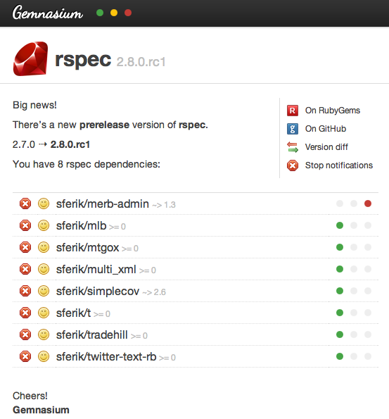
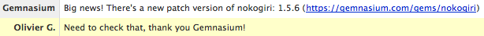

or
Olivier Gonzalez / Tech-Angels / gonzoyumo
Gemnasium is a dependencies tracking system (SaaS) that keeps you up to date on the packages
that matter to you.
Gemnasium parses your project's dependency files, learns them and track package updates with available providers:
Realtime email notification:

Realtime campfire notification:
